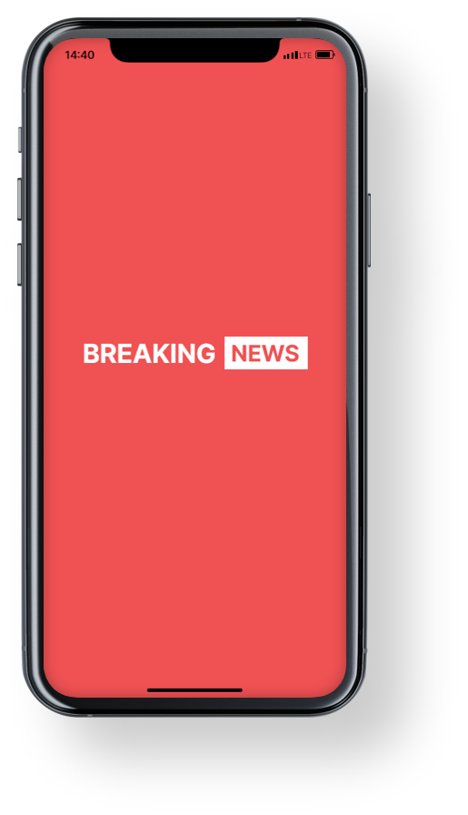
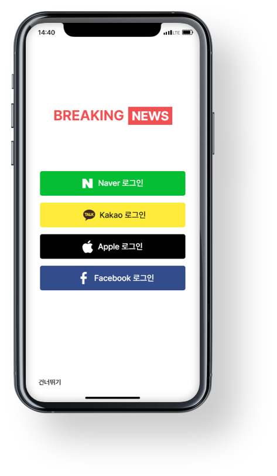
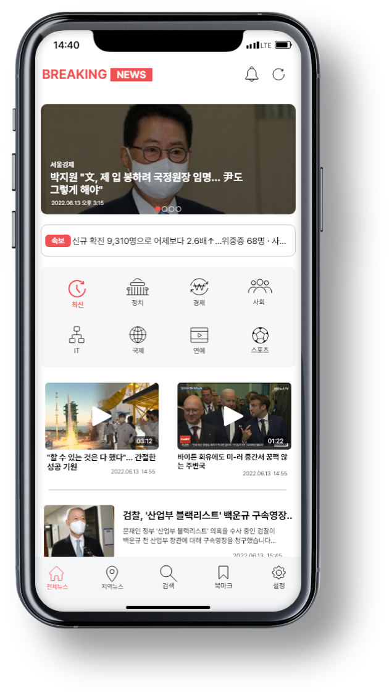
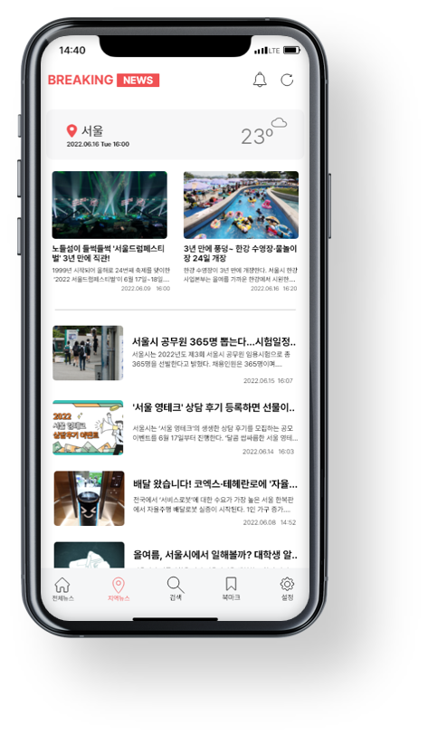
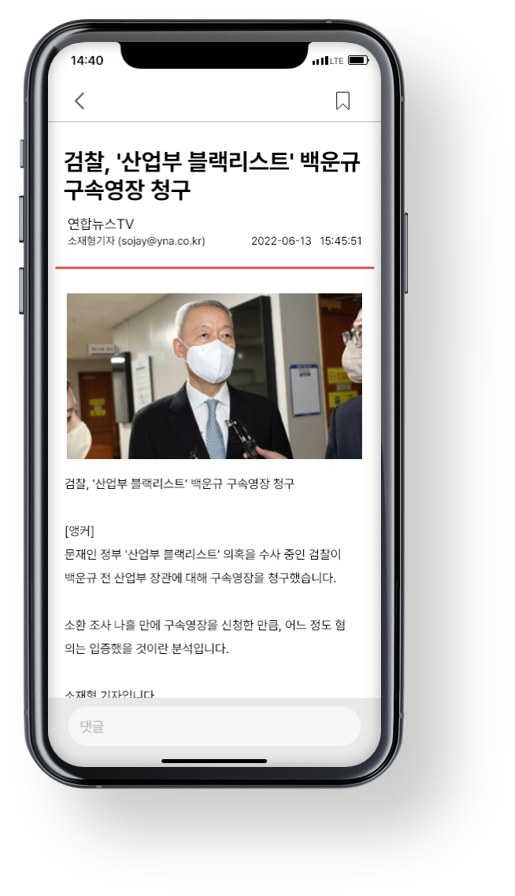
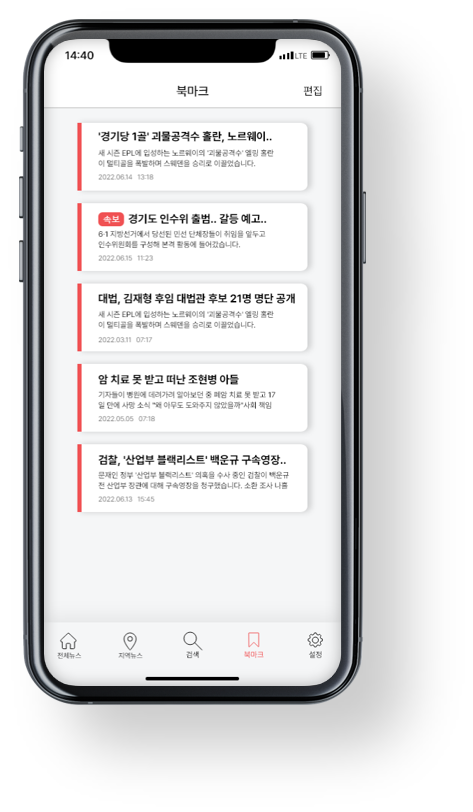
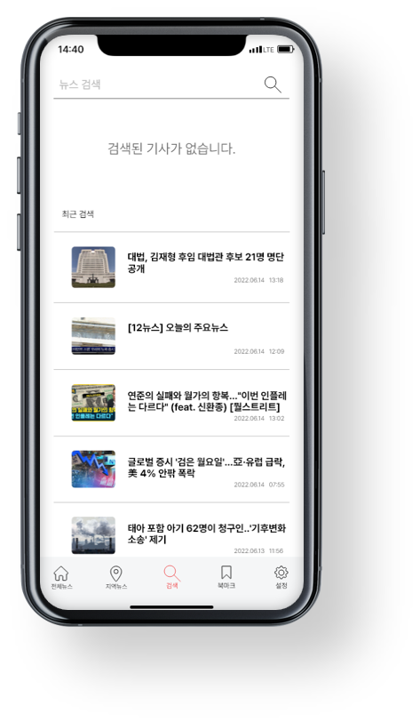
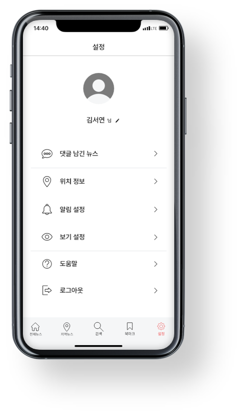

BREAKING NEWS
Overview
프로젝트 목표 :
기존 어플의 UI RE-Design 하여 사용성을 개선
수행 기간 :
2022.05.03 ~ 2022.06.28
수행 인원 :
같이나아가조 (3명) - 원서영, 이윤진, 조현비
Keyword
My Role
적극적으로 아이디어를 내고 소통하는 팀원
1. 선정 애플리케이션 제시 및 선정 이유 설명
2. 선정 애플리케이션 분석
3. 경쟁사 앱 분석 (뉴닉: 뉴스레터 애플리케이션 )
4. UX VISION 문제점 및 개선방안 제시
5. 페르소나 목적 니즈 방해 요인 의견 제시 및 근거자료 작성
6. 사용자 여정지도 시나리오 내용 정리
7. 와이어 프레임 구성 의견 제시 및 제작
8. 프로토타입 제작 및 동작 추가
Tilmeline
1. 리디자인 애플리케이션 (Breaking News) 선정
2. 애플리케이션 분석(개선사항, 장단점)
3. 경쟁사 애플리케이션 분석 및 자료 리서치(앱 사용자, 레이아웃 구성 등)
4. UX VISION 설정
5. 페르소나 설정
6. 사용자 여정지도
7. 와이어 프레임 제작
8. 프로토타입 제작
UX Vision
리디자인 전 :
"소규모 언론사들을 지원하는 방식으로 지역 뉴스 생태계를 되살리는 데 힘쓰고 있다."
리디자인 후 :
"방대한 기사를 보기 쉽게 전달한다."
Style Guide
| Keyword | #심플한 #명확한 | ||
| Typography | Pretendard ThinLightRegularMediumBlack | ||
| Color |
#F05153
main |
#606060
#F5F6F7
sub |
|
Prototype








Result
가장 문제였던 레이아웃 구성의 변화로 사용자가 보다 보기 쉬운 화면으로 변경되었음
포인트 컬러를 적절히 사용 하여 다소 심심하게 보일 수 있는 화면에 포인트를 주어 각 레이아웃의 적절한 구분 을 줌
불필요한 기능(게시글 작성 등)은 제외하고 주요한 기능(기사 보기, 검색, 북마크)들을 중점으로 내비게이션 바에 배치하여 사용자의 편의성을 높이는 디자인으로 변경
카테고리 구분이 명확하지 않게 이미지 위주로 나열된 기사들의 이미지, 글자의 크기 조절과 적절한 레이아웃 구성으로 깔끔한 화면으로 디자인 변경
프로젝트 발표시 인터랙티브한 프로토타입 시연에 반응이 좋았고 질의응답을 통해 긍정적인 피드백을 받음
Review
잘한 점
정해진 완료기간을 준수하여 프로젝트를 완성해냄
팀원들에게 내가 생각하고 있는 의견에 대해 구체적으로 설명하여 설득시켜 진취적으로 프로젝트를 진행해 나감
기사들 사이의 강약을 주어서 기사 리스트들의 가독성을 높임
통일되지 않은 기존 아이콘들을 통일하여 전체적인 디자인적 일관성을 맞춤
사용자에게 꼭 필요한 카테고리 선택과 검색과 같은 기능들을 페이지 중앙과 하단 배너에 위치 시켜 가시성을 높임
아쉬운 점
한정 된 시간내에 디자인 및 기능구현이 완료되어야 하여 아쉬운 부분이 존재 하지만 최선을 다해 완성을 했고 아쉬운 부분은 프로젝트가 끝난 후에도 개별적으로 수정할 예정
가장 많이 고민을 했던 북마크 페이지의 구성이 기존의 디자인과 다소 어울리지 않게 디자인됨
속보를 다른 기사들에 비해 보다 많이 보여주지 못함
배운 점
개인 프로젝트가 아닌 팀원들과 함께 진행하는 팀 프로젝트이므로 팀원들과 소통 방식에 대해 배우게 됨
하나의 과제를 나누어 진행하며 서로가 수정하는 부분을 합치고 서로 수정하는 다양한 방식에 대해 배움
내가 가지고 있는 아이디어와 의견에 대해 팀원들에게 설명하고 수용할 수 있게 설득하는 방식 과 채택되지 못한 의견에 대해 받아들이는 방법에 대해 배움
자료를 찾는 방법부터 그 자료를 어떻게 사용하고 사람들에게 설득시킬 수 있게 정리하는 지에 대해 배움